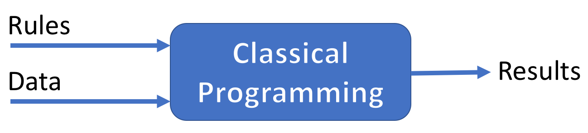
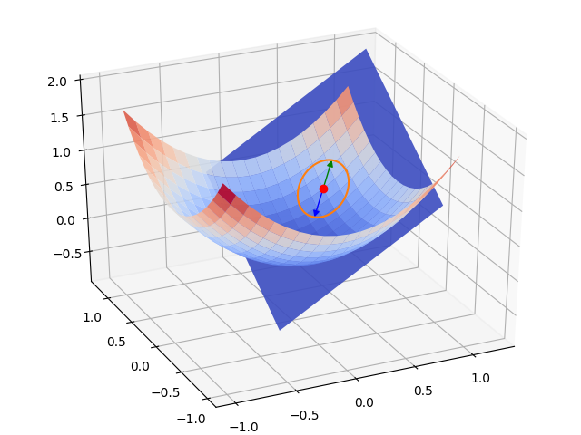
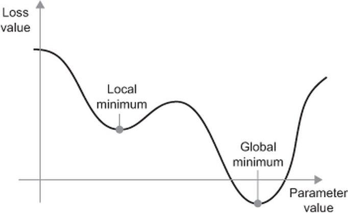

Machine Learning Fundamentals
Ecole Nationale Supérieure de Cognitique

Summary
- Introduction to Machine Learning
- Anatomy of a supervised ML system
- Steps of an ML project
Introduction to Machine Learning
A first definition
“The field of study that gives computers the ability to learn without being explicitly programmed” (Arthur Samuel, 1959).
Learning machines?
Machine Learning is a set of techniques for giving machines the ability to learn from data, in order to:
- Identify or classify elements
- Detect tendencies
- Make predictions
As more data is fed into the system, results get better: performance improves with experience.
A new paradigm



Typology of ML systems
ML systems can be categorized according to:
- The existence of supervision during training.
- Their ability to learn incrementally.
- The use of a model to make predictions.

Supervised Learning
Expected results are given to the system along with training data.
This data is labeled (tagged).
Regression
The system predicts continuous values.

Classification
The system predicts discrete values: input is categorized.
Examples
- Regression: housing prices, temperature forecasting, age of a person.
- Binary classification (0 or 1): cat/not a cat, spam/legit, begign/malignant tumor.
- Multiclass classification: cat/dog/something else, handwritten digit recognition, tweet categorization.
Unsupervised Learning
Training data comes without the expected results.
The system must discover some structure in the data by himself.
Clustering
Data is partitioned into groups.
Anomaly Detection
The system is able to detect abnomal samples (outliers).
Dimensionality Reduction
Data is projected into a lesser-dimension space.
Reinforcement Learning
Without being given an explicit goal, the system’s decisions produce a reward it tries to maximize.
Batch Vs Online Learning
Online learning: ability of a system to learn incrementally from new samples.
Extracts from the book Hands-on Machine Learning with Scikit-Learn & TensorFlow by A. Géron
Example-based Vs Model-based predictions

Extracts from the book Hands-on Machine Learning with Scikit-Learn & TensorFlow by A. Géron
Anatomy of a supervised ML system
The elements of a supervised ML system
- Some data under numeric form.
- A model able to produce results from data.
- A loss (or cost) function to quantify the difference between expected and actual results.
- An optimization algorithm to update the model’s parameters in order to minimize the loss.
Terminology and notation
- Label (or target): expected result, named
$ y $. - Feature: property of a data sample, named
$ x_i $. - Sample: a particular instance of data associated to
$ n $features, named$ x = \left\{ x_1, x_2, \dotsc, x_n \right\} $. - A sample can be labeled or not.
Input format
Data is often given to the ML system under the form of a 2-dimensional matrix (samples, features) named $ X $.
- First dimension is for the
$ m $samples. - Second is for the
$ n $features of each sample.
$$X = \begin{pmatrix}
\ x^{(1)}_1 & x^{(1)}_2 & \cdots & x^{(1)}_n \\
\ x^{(2)}_1 & x^{(2)}_2 & \cdots & x^{(2)}_n \\
\ \vdots & \vdots & \ddots & \vdots \\
\ x^{(m)}_1 & x^{(m)}_2 & \cdots & x^{(m)}_n
\end{pmatrix}\;\;
y = \begin{pmatrix}
\ y^{(1)} \\
\ y^{(2)} \\
\ \vdots \\
\ y^{(m)}
\end{pmatrix}$$
Example: housing prices
| Surface | No of rooms | Age (years) | Postcode | Price |
|---|---|---|---|---|
| 145 | 6 | 32 | 33600 | 380 |
| 85 | 3 | 45 | 33700 | 290 |
| 210 | 7 | 12 | 33400 | 740 |
| … | … | … | … | … |
| 110 | 4 | 22 | 33000 | 410 |
Housing prices: input data
Multidimensional data
- Images: 4D tensor of the form (samples, height, width, color_channels)
- Videos: 5D tensor of the form (samples, frames, height, width, color_channels)
Depending on the model, a reshaping step may be needed.
Digit representation
The model
- Defines the relationship between features and labels.
- Made of parameters, named the
$ \theta $(or sometimes$ \omega $) vector. - Its calculated result is named
$ y' $or$ \hat{y} $.
$$y' = \begin{pmatrix}
\ y'^{(1)} \\
\ y'^{(2)} \\
\ \vdots \\
\ y'^{(m)}
\end{pmatrix}$$
Model lifecycle
There are two (repeatable) phases:
- Training: Input sample after input sample, the model learns to find a relationship between features and labels.
- Inference: the trained model is used to make predictions.
The loss function
- Quantifies the difference between expected results (ground truth) and actual results calculated by the model.
- For a given dataset, the loss is only a function of the model’s parameters.
- The loss function is named
$ \mathcal{L}(\theta) $or sometimes$ \mathcal{J}(\theta) $ - Different loss functions exists. The choice depends on the learning type.
Loss functions for regression
- Mean Absolute Error (MAE, aka L1 loss):
$\mathcal{L}(\theta) = \frac{1}{m}\sum_{i=1}^m |y'^{(i)} - y^{(i)}|$ - Mean Squared Error (MSE, aka L2 loss):
$\mathcal{L}(\theta) = \frac{1}{m}\sum_{i=1}^m (y'^{(i)} - y^{(i)})^2$ - Root Mean Squared Error (RMSE):
$\mathcal{L}(\theta) = \sqrt{\frac{1}{m}\sum_{i=1}^m (y'^{(i)} - y^{(i)})^2}$
Loss functions for binary classification
- The expected result
$ y^{(i)} $is either 0 or 1. - The calculated result
$ y'^{(i)} $is a probability (real value between 0 and 1).
Binary Crossentropy: $$\mathcal{L}(\theta) = -\frac{1}{m}\sum_{i=1}^m \left[y^{(i)} \log(y'^{(i)}) + (1-y^{(i)}) \log(1-y'^{(i)})\right]$$
Multiclass classification
$ y^{(i)} $et$ y'^{(i)} $are vectors with as many elements as the number of predicted classes$ K $.$ y^{(i)}_k $is 1 if the ith sample’s class is$ k $, 0 otherwise.$ y'^{(i)} $is a probability vector.
$$y = \begin{pmatrix}
\ y^{(1)}_1 & \cdots & y^{(1)}_K \\
\ y^{(2)}_1 & \cdots & y^{(2)}_K \\
\ \vdots & \ddots & \vdots \\
\ y^{(m)}_1 & \cdots & y^{(m)}_K
\end{pmatrix}\;\;
y' = \begin{pmatrix}
\ y'^{(1)}_1 & \cdots & y'^{(1)}_K \\
\ y'^{(2)}_1 & \cdots & y'^{(2)}_K \\
\ \vdots & \ddots & \vdots \\
\ y'^{(m)}_1 & \cdots & y'^{(m)}_K
\end{pmatrix}$$
Loss function for multiclass classification
Categorical Crossentropy: $$\mathcal{L}(\theta) = -\frac{1}{m}\sum_{i=1}^m\sum_{k=1}^K y^{(i)}_k \log(y'^{(i)}_k)$$
(Same as Binary Crossentropy when $ K = 2 $)
Optimization algorithm
- Used during the training phase.
- Objective: minimize the loss.
An iterative approach
The model’s parameters are iteratively updated until an optimum is reached.
Gradient descent
- Used in several ML models, including neural networks.
- General idea: converging to a loss function’s minimum by updating parameters in small steps, in the opposite direction of the loss function gradient.
The notion of gradient
- Expresses the variation of a function wrt the variation of its parameters.
- Vector containing partial derivatives of the function wrt each of its
$ n $parameters.
$$\nabla_{\theta}\mathcal{L}(\theta) = \begin{pmatrix}
\ \frac{\partial}{\partial \theta_1} \mathcal{L}(\theta) \\
\ \frac{\partial}{\partial \theta_2} \mathcal{L}(\theta) \\
\ \vdots \\
\ \frac{\partial}{\partial \theta_n} \mathcal{L}(\theta)
\end{pmatrix}$$
1D gradient descent (one parameter)
2D gradient (two parameters)

2D gradient descent

Gradient descent types
- Batch Gradient Descent
- Stochastic Gradient Descent
- Mini-Batch SGD
Batch Gradient Descent
The gradient is calculated on the whole dataset before parameters are updated.
- Advantages: simple and safe (always converges in the right direction).
- Drawback: can become slow and untractable with a big dataset.
Stochastic Gradient Descent
The gradient is calculated on only one radomly chosen sample whole dataset before parameters are updated.
- Advantages:
- Very fast.
- Enables learning from each new sample (online learning).
- Drawback:
- Convergence is not guaranteed.
- No vectorization of computations.
Mini-Batch SGD
The gradient is calculated on a small set of samples, called a batch, before parameters are updated.
- Combines the advantages of batch and stochastic GD.
- Default method for many ML libraries.
- The mini-batch size varies between 10 and 1000 samples, depending of the dataset size.
Updating the model’s parameters
The learning rate $ \eta $ is the update factor for parameters once gradient is calculated.
$$\theta_{next} = \theta - \eta\nabla_{\theta}\mathcal{L}(\theta)$$
Importance of learning rate
The local minima problem


Steps of an ML project
General approach
- Frame the problem
- Collect, analyze and prepare the data
- Select and train a model
- Tune the chosen model
- Deploy the model to production
1. Problem framing
- What is the business objective?
- How good are the current solutions?
- What data is available?
- Is the problem a good fit for ML?
- What is the expected learning type (supervised or not, batch/online…)?
- How will the model’s performance be evaluated?
Properties of ML-friendly problems
- Difficulty to express the actions as rules.
- Data too complex for traditional analytical methods:
- High number of features.
- Highly correlated data (data with similar or closely related values).
- Performance > explicability.
Performance metrics for regression
MAE (L1 loss) and MSE (L2 loss) can also be used to evaluate the model.
Performance metrics for classification
During inference, the model output (probabilities) is thresholded into discrete values.
Thresholds are problem-dependent.
Decision boundary
Graphical representation of the frontier between classes.
Accuracy
The standard metric for classification is accuracy.
$$Accuracy = \frac{\text{Number of exact predictions}}{\text{Total number of predictions}} $$
True/False positives and negatives
- True Positive (TP): the model correctly predicts the positive class.
- False Positive (FP): the model incorrectly predicts the positive class.
- True Negative (TN): the model correctly predicts the negative class.
- False Negative (FN): the model incorrectly predicts the negative class.
$$Accuracy = \frac{TP + TN}{TP + TN + FP + FN}$$
Confusion matrix
Context: the boy who cried wolf. “Wolf” = positive class, “No wolf” = negative class.
Useful representation of classification results.
Multiclass confusion matrix

Accuracy and class imbalance
Context: binary classification of tumors.

$Accuracy = \frac{TP + TN}{TP + TN + FP + FN} = 91\%$
But only 1 malignant tumor out of 9 is detected!
Precision and recall
- Precision: proportion of positive identifications that were actually correct.
- Recall: proportion of actual positives that were identified correctly.
$$Precision = \frac{TP}{TP + FP} = \frac{\text{True Positives}}{\text{Total Predicted Positives}}$$
$$Recall = \frac{TP}{TP + FN} = \frac{\text{True Positives}}{\text{Total Actual Positives}}$$
Example: tumor classifier
$$Precision = \frac{1}{1 + 1} = 50\%\;\;\;\;
Recall = \frac{1}{1 + 8} = 11\%$$
Precision or recall?
- Improving precision typically reduces recall and vice versa (example).
- Precision matters most when the cost of false positives is high (example: spam detection).
- Recall matters most when the cost of false negatives is high (example: tumor detection).
F1 score
- Weighted average of precision and recall.
- Also known as balanced F-score or F-measure.
$$F1 = 2 \times \frac{Precision \times Recall}{Precision + Recall}$$
Good metric in case of class imbalance, when precision and recall are both important.
ROC curve
$$\text{TP Rate} = \frac{TP}{TP + FN} = Recall\;\;\;\;
\text{FP Rate} = \frac{FP}{FP + TN}$$
- ROC stands for “Receiver Operating Characteristic”.
- A ROC curve plots TPR vs. FPR at different classification thresholds.
Typical ROC curve
AUC
- AOC stands for “Area Under the ROC Curve”.
- Classifier’s performance at all thresholds.
2. Collect, analyze and prepare the data
Data quality is paramount for any ML project.
Operations on data
- Data exploration and visualization through dedicated tools is essential.
- In order to better validate the model, data is always separated in several sets.
- Real-world data is often incomplete and noisy. It must be cleaned, formatted and sometimes enriched before being used as training input.
Histogram of features values for the World Happiness 2017 dataset
Training, validation and test sets
During inference, a model must be able to generalize (perform well with new data).
In order to assert this ability, data is typically split into 2 or 3 sets:
- Training set (between 60 and 98% of data): fed to the model during training.
- Validation set: used to tune the model.
- Test set: used to check the model’s performance on unknown data.
Data splitting examples
# Assuming x is a (1000, features_count) matrix
# Randomize samples order
np.random.shuffle(x)
training_x, val_x, test_x = x[:800, :], x[800:900, :], x[900:, :]
# training_x is a (800, features_count) matrix
# val_x and test_x both are (100, features_count) matrices
from sklearn.model_selection import train_test_split
# Using sk-learn's predefined function train_test_split
X_train, X_test, y_train, y_test = train_test_split(X, y, test_size=0.25)
K-fold Cross Validation
Used to obtain a significant validation set with few data.

Data cleaning and formatting
Necessary step before feeding them to a model.
- Removal of superflous features.
- Add missing values.
- Transformation into numeric form.
- Normalization.
- Labelling (if needed).
Data standardization
In order to facilite training, data has to:
- Be homogeneous
Have small values
# Assuming x is a (samples, features) matrix x -= x.mean(axis=0) # center data x /= x.std(axis=0) # reduce data # x now has a mean of 0 and a standard deviation of 1
Enriching the dataset
- New features (feature engineering).
- New exemples (data augmentation).

3. Select and train a model
- Model choice depends on the learning type (supervised or not…).
- For each learning type, several models of various complexity exist.
- Starting with a simple model (“baseline model”) is often a good idea:
- Useful as a future reference.
- May perform quite well.
The hyperparameters
- User-defined model parameters.
$ \neq $internal model parameters, automatically updated during training.- Examples : learning rate, mini-batch size, number of layers for a neural network…
- They directly affect the model’s performance.
- Objective: find the best possible values for hyperparameters.
Model training
- Empirical and iterative phase.
- Objective: overfitting the training set.
Optimization/generalisation
Underfitting and overfitting
- Underfitting (bias): insufficient performance on training set.
- Overfitting (variance): performance gap between training and validation sets.
4. Model tuning
- Another empirical and iterative phase, based on validation results.
- Objective: seeking both optimization and generalization.
- Visualizing the results graphically is useful.
- Automatically done by some ML libraries.
- Tuning is done on the validation set, not on the test set.
Why a validation set?
- During tuning, model is optimized on validation data.
- Risk: overfitting the validation set (artificial performance on this data, poor performance on new data).
5. Deploy the model to production
- A trained model can be saved to several formats.
- It can be deployed on a dedicated server accessible through an API, or used directly on a device.
- A deployed model is often a part of a more important system.